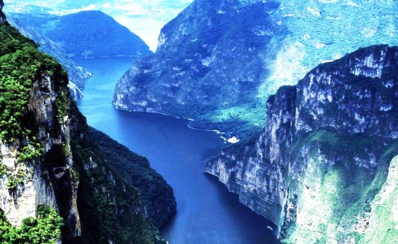

12 Marzo 2019 - Cancun, Mexico - 10 k Vistas
Cancún (en maya: kaan y kun, ‘cuna o nido de serpientes’)? es una ciudad en el estado de Quintana Roo, se ubica en el oriente de México
12 Marzo 2019 - Cancun, Mexico - 10 k Vistas
Cancún (en maya: kaan y kun, ‘cuna o nido de serpientes’)? es una ciudad en el estado de Quintana Roo, se ubica en el oriente de México

Albert Einstein (Alemán: 14 de marzo de 1879) fue un físico alemán de origen judío, nacionalizado después suizo, austriaco y estadounidense. Se lo considera el científico más importante, conocido y popular del siglo XX